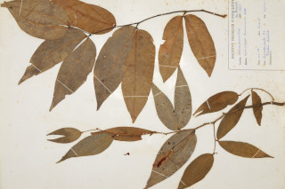

Images :


| Habit : | Tall evergreen trees , buttressed , up to 30 m tall. |
| Leaves : | Leaves compound , bifoliolate , alternate , distichous , pulvinate ; stipules caducous ; rachis to 0.7 cm long, canaliculate ; lamina 4-14 x 1.5-4.5 cm, asymmetric , falcate or lanceolate , apex gradually acuminate with blunt or retuse tip, base asymmetric , margin entire , chartaceous or subcoriaceous , glabrous ; midrib raised above; secondary_nerves ca.12 pairs; tertiary_nerves reticulate . |
| Inflorescence / Flower : | Flowers rosy-white in short axillary racemes . |
| Fruit and Seed : | Pod flat, smooth, glabrous , to 3.2 cm long; 1-seeded . |